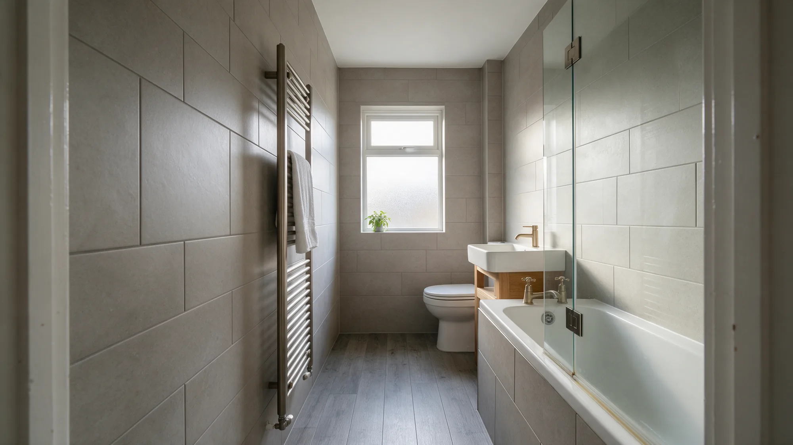
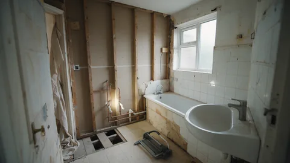
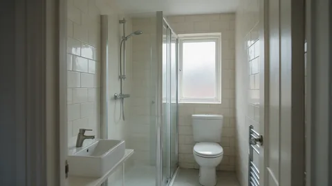
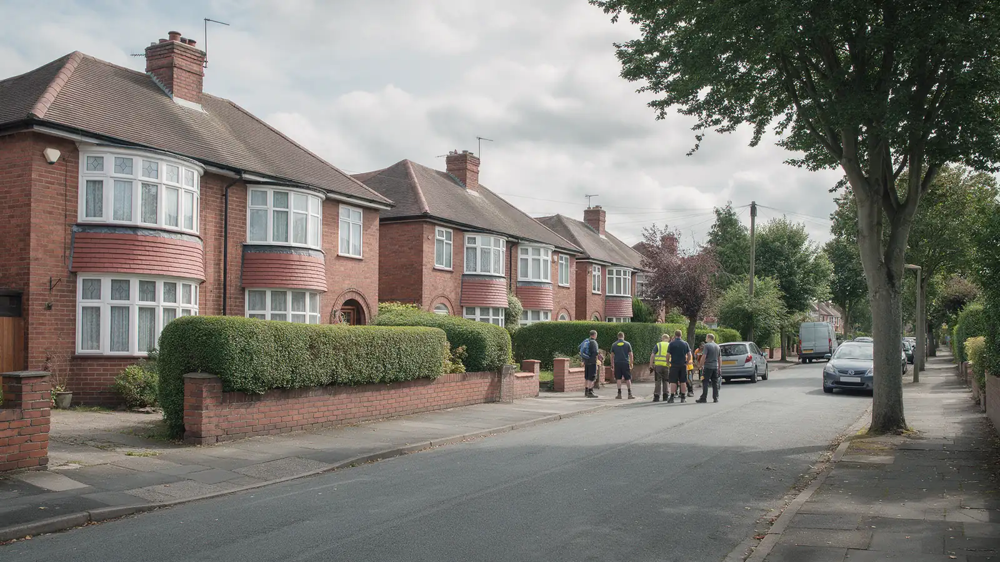
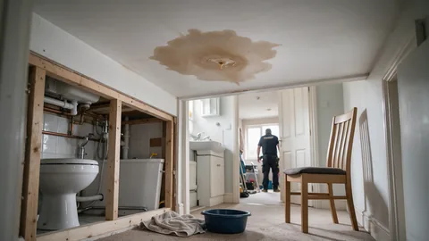

Bathroom fitters · Cheshire
A proper bathroom,
fitted once.
Refits, shower rooms, wet rooms and the small repairs nobody else will come out for. One team in the room from the first morning to the last, and the floor swept before we leave.
What we do
Six kinds of job.
 Generated photo
Generated photoFull bathroom refits
The whole room, out and back in again. Suite, tiling, floor, plaster and the bits behind the wall nobody sees.
 Generated photo
Generated photoShower rooms and en suites
Small rooms done properly. Turning a bathroom into a shower room, or finding an en suite in a box room.
 Generated photo
Generated photoWet rooms and walk in showers
Level access floors, tanked and sloped to a drain, or a tray and a screen where that suits the house better.
 Generated photo
Generated photoAccessible bathrooms
Rooms that still work when getting in and out is the hard part. Level access, rails fixed into something solid, a seat.
 Generated photo
Generated photoTiling
Walls and floors set out before any adhesive goes on, so the cuts land somewhere sensible. Large format included.
 Generated photo
Generated photoSmall repairs
Leaking showers, loose tiles and sealant that has gone black. The jobs most firms will not come out for.
How it works
Four steps, no mystery.
You tell us the room
A call, the chat box or the form. The rough size, what is in there now, and what you wish was in there instead.
We come and look
We measure up, check the floor, the waste run and the water pressure, and say what the room will and will not take.
You get a written quote
What we will do, what is included, what is not, and how long it should take Sample.
We fit it
Same faces every day, dust sheets down the hall, the toilet back on most nights, and the room handed over clean.


Illustrative, not a real job. Both pictures were generated for this demo from the same room, one before and one after, to show the kind of change a refit makes.
Before and after
Same four walls, same window, different room.
Drag the slider. On the left, pink tiles, a bath panel that has been off and on a dozen times and a shower curtain that sticks to you. On the right, the same room with the same window in the same place.
It is an illustration rather than a real job, but it is the shape of most of the bathrooms we get asked about.
See the rest of the workOur work
Sample jobs.
8 jobs shown
Generated photoFull bathroom refitMacclesfield · sample
Generated photoStripped back, day twoCongleton · sample Generated photoFirst fix before boardingWilmslow · sampleGenerated photoEn suite in a box roomKnutsford · sample
Generated photoFirst fix before boardingWilmslow · sampleGenerated photoEn suite in a box roomKnutsford · sample
Generated photoBathroom turned shower roomSandbach · sampleGenerated photoWet room, level accessMacclesfield · sampleGenerated photoAccessible bathroomWilmslow · sampleGenerated photoLarge format wall tilingCongleton · sampleEvery job here is a made up sample with a generated picture. Tap one to see it bigger.
Where we work
Around the Cheshire towns.
Based in Cheshire Sample. These are the towns we cover most. Coverage is a sample for this demo.

Generated photoWhat people say
Sample reviews.
Sample review
They lifted the old toilet out and put it back on a temporary connection at the end of day one, so we were never stuck. Little thing, made the whole week.
Steph, Macclesfield
Sample review
Set the tiles out on the floor first and showed us where the cuts would land before anything went on the wall. Nobody else had even mentioned it.
Rafiq, Wilmslow
Sample review
We needed a level access shower for my dad. They talked about how he actually moves around the room rather than just selling us rails.
Lorna, Knutsford
Sample review
Came out for a leaking shower that two other firms would not look at. Found it was the tray seal, not the pipe, and said so.
Ged, Congleton
Made up for this demo. Wrenhollow does not exist, so neither do its customers.
Questions
What people ask us first.
How long does a bathroom refit take?
A full refit in an average British bathroom is usually around one to two weeks on site. A shower room or an en suite is normally quicker.
What stretches it is moving the toilet or the soil pipe, floorboards or plaster that only show themselves once the old suite is out, and patterned tiling that has to be set out properly. Your quote says how long yours should take Sample.
Do you supply the suite or do I?
Either way suits us. Plenty of people choose their own suite and tiles and we fit what turns up. Others would rather we sorted the lot, and then we put a list together of what we would use and you say yes or no to it.
What we do ask is that everything is on site and checked before we start. A missing waste or a cracked basin on the first morning holds up the whole job.
Can you do the plumbing, tiling and electrics in one job?
The plumbing, tiling, plastering and fitting are all ours, so one team does the bulk of it and you are not chasing four firms.
Anything electrical, so a new extractor fan, downlights, a shaver socket or an electric shower, is done by a qualified electrician we work with, booked in at the right stage.
Will I be without a toilet?
Not for long. On a one bathroom house we normally take the old toilet out in the morning and put it back on a temporary connection before we leave, so you have a working toilet overnight.
There is usually a day or two in the middle, while the floor goes down or the soil connection moves, when it cannot go back. We tell you which days those are before we start, not on the morning.
Can you design a bathroom for someone with limited mobility?
Yes, and it is a good part of what we do. It usually means a level access shower instead of a bath, a slip resistant floor, grab rails fixed through to something solid rather than into plasterboard, a seat, lever taps and a comfort height toilet.
We come and look at the room and talk about who is using it and how, because the right answer for somebody using a frame is not the same as for somebody in a wheelchair. Your council may run a scheme that helps with the cost of adapting a bathroom, so ask them before you commit to anything.
General guidance written for this demo, not advice on your bathroom.
Advice
Worth reading first.
Generated photoWet room or walk in shower: which suits your house
They get used as if they mean the same thing. They do not, and the difference is mostly about your floor.

Generated photoWhy a shower leaks through the ceiling, and what to check
A stain downstairs almost never means the pipe has burst. Here are the usual suspects, in the order to check them.
Planning a bathroom refit: the order things happen
Every refit runs in roughly the same order. Knowing it is what stops you buying the wrong thing at the wrong time.
About this demo
What this demo shows.
Wrenhollow is not a real firm. The site is here to show a bathroom fitter what Clockwork AI builds, in six parts.
No prices here. What it would cost for your firm is a conversation, not a web page. The Clockwork number is in the bar at the top.
Thinking about the bathroom?
Tell us roughly what you want and we will come and look at the room. You get it in writing afterwards, not a number over the phone.